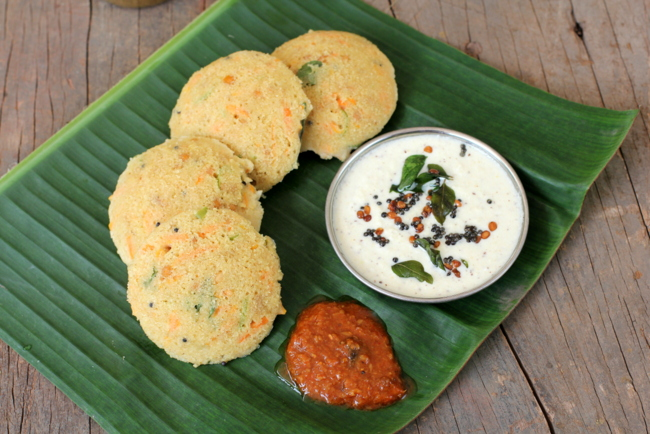

2 cups oats
1/2 liter curd (slightly sour)
1 Tbsp mustard seeds
1 Tbsp urad dal
1/2 Tbsp channa dal
1/2 Tbsp oil
2 tsp finely chopped green chillies
1 cup grated carrots
2 Tbsp finely chopped coriander
1/2 Tbsp turmeric powder
2 Tbsp salt
Eno fruit salt, a pinch
On a tawa, dry roast the oats until it turns slightly brown and then powder the oats in a mixer.
In a pan, add oil, mustard seeds, urad dal, channa dal and allow the mustard to splutter and the dals to turn golden.
To this, add the chopped chillies, coriander and grated carrots.
Add the turmeric powder and fry for a minute.
Add this seasoning to the powdered oats mixture and add the curd to it to make a batter like that of idli batter's consistency.
You can add as much curd to the mixture to achieve the consistency, but do not add water to the batter.
Grease the idli steamer plates with oil and pour the batter into each area of the steamer.
Steam the idlis for 15 minutes.
Note: To know if the idli is cooked, poke an idli with knife and check if the batter does not stick to the knife.
Once done remove the idlis and serve with
Onion chutney.